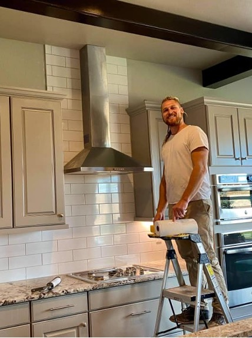

About Kaizen Construction
Constant Improvement is our motto, and the attitude we bring to every job, every day. Kaizen Construction is a small, family-owned remodeling and home repair company based in Colorado Springs, CO. We are masters of our craft and aim to provide Colorado Springs with quality service at a fair price. We are fully insured and are known for our dependability, quality, and attention to detail. All work is attended to firsthand by the company’s owner and operator, James Kaan. This allows James to consistently provide the high quality and great service he is known for.
Our Beginning
In 2012, while working towards a bachelor’s degree in Nursing, James got a call asking for an extra set of hands repairing a friend’s home. Some concrete needed mixing, some boards needed cutting, and some nails needed sinking. Essentially, a home needed rescuing, and the pride James felt working with his hands to resuscitate a structure was all he needed to get hooked. Since that day, James Kaan has been striving to build his skills and expertise in the remodeling industry at every opportunity. Known by his friends and family as a perfectionist, James grew tired of seeing home repairs and remodels carelessly completed by other contractors and decided it was time for change. He started Kaizen Construction in November 2016, vowing to always provide excellent work at a fair price.
Since then, Kaizen Construction has been quickly growing. James’ reputation for quality and craftsmanship precede him and his clients are quick to recommend him to their friends, families, and neighbors. It is James’ “healthy obsession” with detail and welcoming personality that keep him first in the mind of his clients. Constant improvement isn’t just our motto; it’s our way of life.
Ready to Transform Your Space?
Let's discuss how we can bring craftsmanship and care to your next home project.
Schedule Your Free Consultation Today